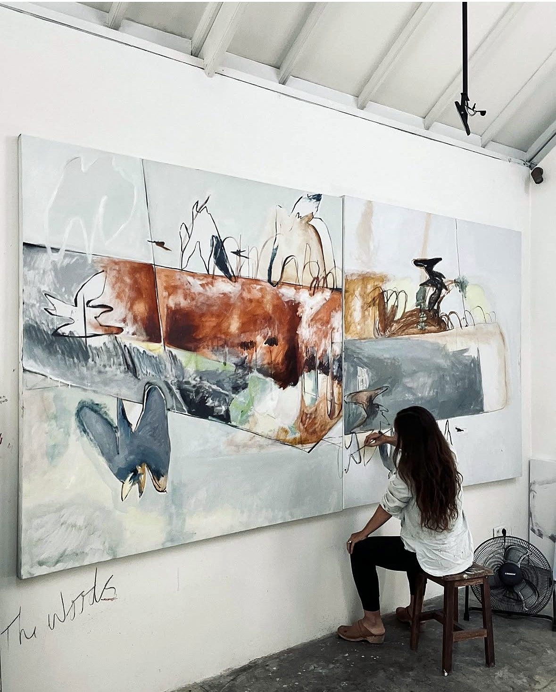
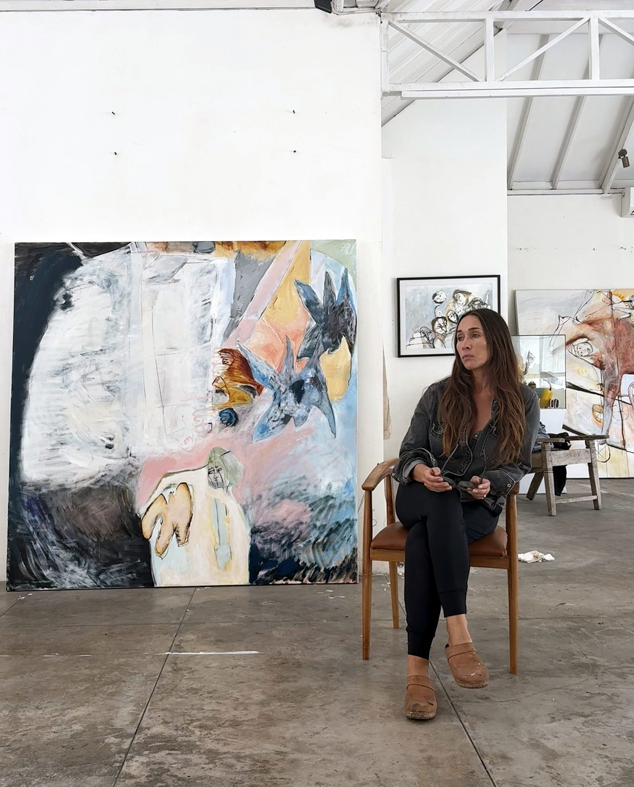
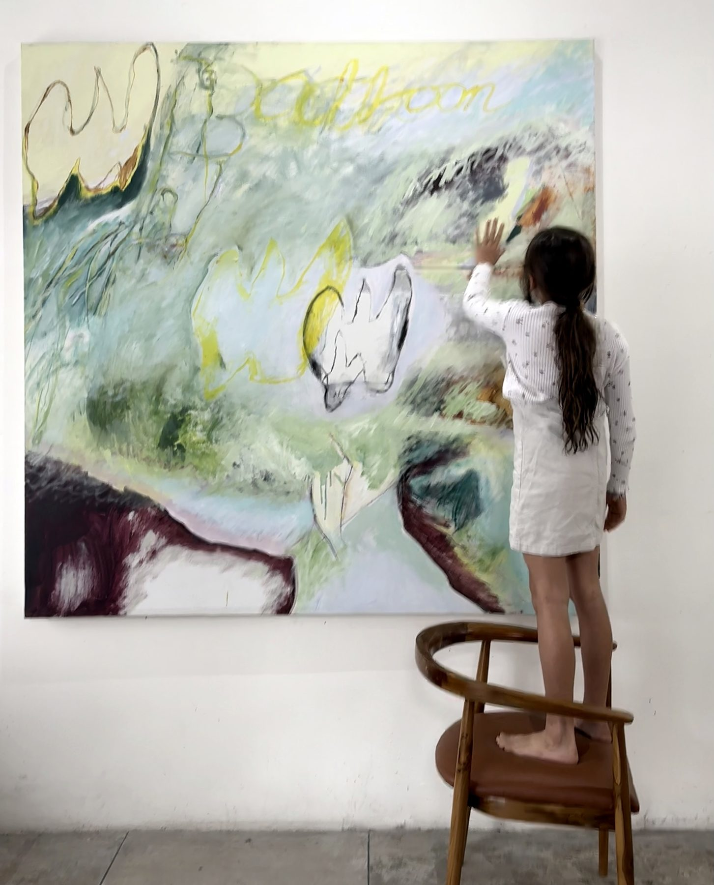
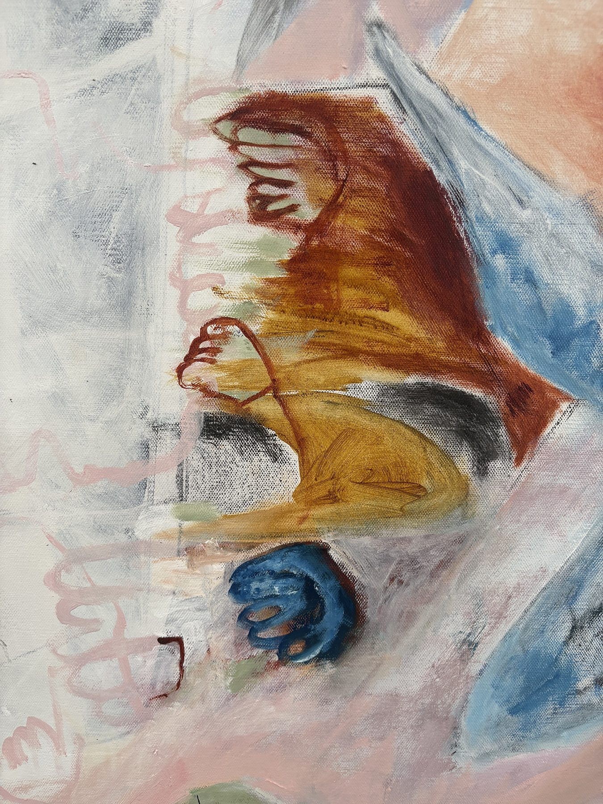
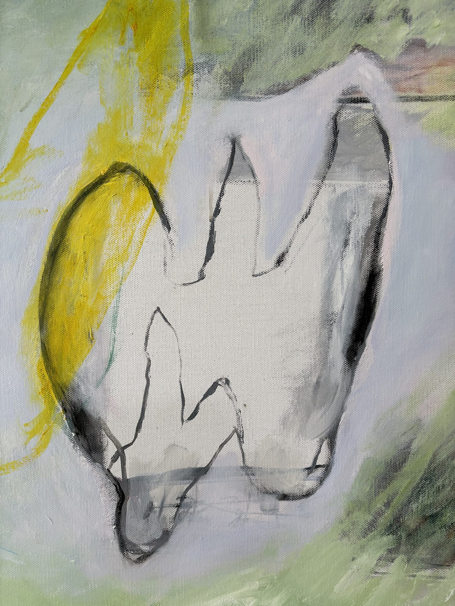

The Birds
A series, 2025–2026 · Oil, charcoal and pastel on linen
The Birds series began uninvited when I was painting about a five-day boat journey my family made through the Indonesian archipelago: a broken anchor, a broken mast, no electrics, no comms, no wind, and finally abandoning ship and climbing a hill on Sumbawa to find help. When I was back in the studio, a bird appeared on the head of a distressed woman, and I let it stay, half hoping it would call for aid. Perhaps it was the beacon that saved us.
Since then the birds have become my way of thinking about migration. After fifteen years as an expat in Southeast Asia, I keep asking where the body belongs, whether instinct leads us home, and whether the friction of living as an outsider has been a strain or something essential. The birds carry that search: nesting, leaving the nest, grace, community, and the constant pull toward home.
I often begin with the outline of a rectangle, a house reduced to its essence and the shape of the homes my husband and I have built. It encloses all who stay within it, almost creating a container for their story, less like a confined cage than a gentle hug. Study in Release, for instance, is not about escaping family life or domesticity, a narrative often used too obviously when discussing art versus family; the constraints or duties have always, in some way, made the freedom possible.
Symbols recur throughout my practice, carrying the work from the subconscious to the canvas. I often begin with a cage-like shape in charcoal: an arched line with vertical bars left floating, never touching the edges, so freedom stays possible. Then come washes of thinned oil, light as tea stains, and the form starts to appear. I move between canvases, always working on more than one. My teacher Larry Poons would shout at me never to stand and perch, because that is when the ego takes over and a painting loses its childlike vitality. So the work begins raw and feverish and resolves slowly over months, and while it stays in my studio it is still alive and workable. I know a painting is finished when there is nothing left to alter and I get butterflies.
Lydia Janssen (b. 1976, USA) is a painter and former professional modern dancer who lives between Bali and Portugal. She is represented by REDSEA Gallery, Singapore. Full biography · All works · CV
On process
The works

 - 2026 - Oil and charcoal on linen - 178x178cm.jpg)
 - 2026 - Oil and charcoal on linen - 178x178cm.jpg)
 - 2025 - Oil and charcoal on linen - 100x100cm.jpg)
In the studio




